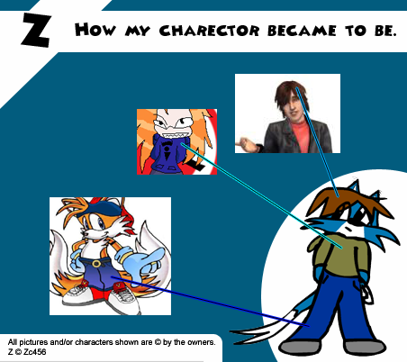

As a request a while back I had to answer where I got the idea of Z from. This is it!
Well the picture is just the tip of the iceburg heres the rest. After I gave up drawing on tails and went through copying off of James just to get a feel of what he was going to look like, sorta thing. I realized I was good at drawing the Tails head better then his body witch lead to eeeeeeq later on. The hair not only did it come from My best pal ZC by James Rocket picture but it also came from one of the hair styles from in Sims 2 since I always wanted that kinda hair, realy bad. He needed clothing I realized that when making this charector at the start he was going to need pants and shoes so I went with the "AOL Tails," as it is called, picture would be my 1st target and I them both. The idea for the shirt actrully came from Musachan's sweater. Also the name Z, alone, came from our cat who had the same name or letter I should I say. The whole art style thing came naturel as shown above.
{kind=link}